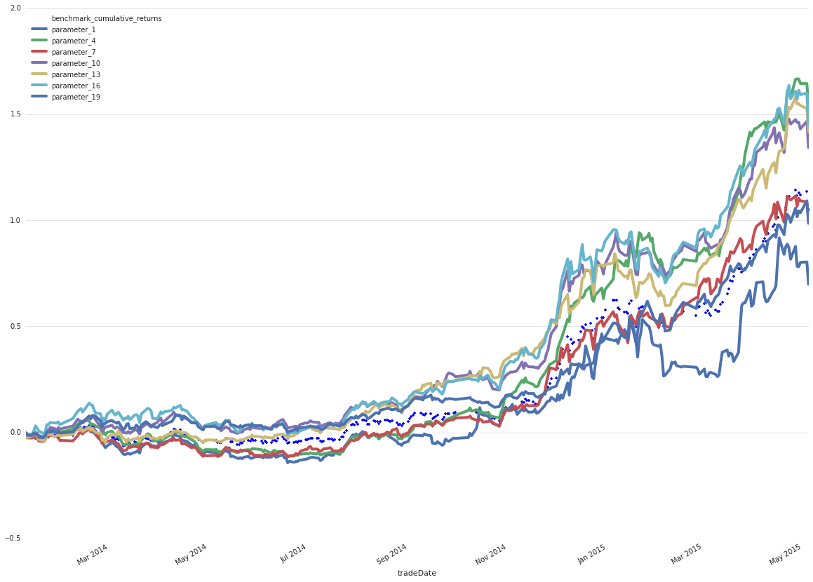

『 Spark 』6. 实战案例 ｜ Spark 在金融领域的应用 ｜ 量化投资
2016-03-17
写在前面
本系列是综合了自己在学习spark过程中的理解记录 ＋ 对参考文章中的一些理解 ＋ 个人实践spark过程中的一些心得而来。写这样一个系列仅仅是为了梳理个人学习spark的笔记记录，并非为了做什么教程，所以一切以个人理解梳理为主，没有必要的细节就不会记录了。若想深入了解，最好阅读参考文章和官方文档。
1. 量化投资入门
1.1 定义
量化投资就是借助现代统计学、数学的方法，从海量历史数据中寻找能够带来超额收益的多种“大概率”策略，并纪律严明地按照这些策略所构建的数量化模型来指导投资，力求取得稳定的、可持续的、高于平均的超额回报。量化投资属主动投资范畴，本质是定性投资的数量化实践，理论基础均为市场的非有效性或弱有效性。
1.2 教程
- 量化投资视频学习课程
- 开启你的量化之旅！
- 量化投资门派梳理
- 量化分析师的Python日记【第1天：谁来给我讲讲Python？】
- 量化分析师的Python日记【第2天：再接着介绍一下Python呗】
- 量化分析师的Python日记【第3天：一大波金融Library来袭之numpy篇】
- 量化分析师的Python日记【第4天：一大波金融Library来袭之scipy篇】
- 量化分析师的Python日记【第5天：数据处理的瑞士军刀pandas】
- 量化分析师的Python日记【第6天：数据处理的瑞士军刀pandas下篇
- 量化分析师的Python日记【第7天：Q Quant 之初出江湖】
- 量化分析师的Python日记【第9天 Q Quant兵器谱之二叉树】
- 量化分析师的Python日记【第8天 Q Quant兵器谱之函数插值】
- 量化分析师的Python日记【第10天 Q Quant兵器谱 -之偏微分方程1】
- 量化分析师的Python日记【第11天 Q Quant兵器谱之偏微分方程2】
- 量化分析师的Python日记【第12天：量化入门进阶之葵花宝典：因子如何产生和回测】
- 量化分析师的Python日记【第13天 Q Quant兵器谱之偏微分方程3】
- 量化分析师的Python日记【第14天：如何在优矿上做Alpha对冲模型】
- 量化分析师的Python日记【第15天：如何在优矿上搞一个wealthfront出来】
- 量化分析师的Python日记【第16天：如何在优矿上一个人干掉一家公募量化团队！Alpha！Go！】
2. 怎么写一个量化策略
其实，只要认真看完上面的几篇文章，对量化投资，写量化策略就有一个大概的思路了：
- 获取数据: 数据可是是构建模型的原材料；
- 分析数据: 这里有大量的工作需要做，数据清洗，标准化，去极值，中性化等等，这是必要的，因为要让你的量化策略稳健，可解释；
- 构建模型: 有了干净的数据，那就可以根据你对数据分析的结果进行模型的构建了；
- 构建策略: 把模型的思想转化为一个投资策略；
- 策略回测: 把你的投资策略放到过去几年的市场回测，验证，看策略是否如你所想；
- 回测归因: 看看你的策略回测是否真实有效；
- 策略模拟: 如果你的策略回测表现良好，可以把策略放到实盘中模拟一下，看看现实效果如何；
- 策略实盘: 好了，到这里，如果策略模拟盘表现也很好的话，赶紧砸钱根据策略给出的信号进行交易吧，或者直接程序话交易，你每天所需要做的事情就是一件事：躺在床上静静的数钱，哈哈
话说了这么多，感觉写一个量化策略好复杂吧，哈哈，其实不然，上面只是一个复杂的量化策略的完整步骤，很多时候也不用这么麻烦，特别是有了 Uqer 这样高质量，易用，并且完全免费的平台后，写个策略信手拈来。
目前 uqer 上已经有数百个策略了，还有数百个策略研究，上面的大多数策略实现都只用了短短数十行代码，大家可以先看看其中的一些策略： uqer 量化策略列表
下面，我们取其中一个策略来做今天的主角：
### python packages
import numpy as np
import operator
### 策略回测参数
start = datetime(2010, 1, 1) # 回测起始时间
end = datetime(2015, 5, 5) # 回测结束时间
benchmark = 'HS300' # 策略参考标准
universe = set_universe('HS300') # 证券池，支持股票和基金
capital_base = 100000 # 起始资金
longest_history = 10
refresh_rate = 5 # 调仓频率，表示执行handle_data的时间间隔
### 初始化策略
def initialize(account):
account.stocks_num = 10
### 策略逻辑，即你的量化投资模型哦，这里用了不到40行代码便轻易实现了一个羊驼策略
def handle_data(account):
hist_prices = account.get_attribute_history('closePrice', 5)
yangtuos = list(YangTuo(set(account.universe)-set(account.valid_secpos.keys()), account.stocks_num))
cash = account.cash
if account.stocks_num == 1:
hist_returns = {}
for stock in account.valid_secpos:
hist_returns[stock] = hist_prices[stock][-1]/hist_prices[stock][0]
sorted_returns = sorted(hist_returns.items(), key=operator.itemgetter(1))
sell_stock = sorted_returns[0][0]
cash = account.cash + hist_prices[sell_stock][-1]*account.valid_secpos.get(sell_stock)
order_to(sell_stock, 0)
else:
account.stocks_num = 1
for stock in yangtuos:
order(stock, cash/len(yangtuos)/hist_prices[stock][-1])
class YangTuo:
def __init__(self, caoyuan=[], count=10):
self.count = count
self.i = 0
self.caoyuan = list(caoyuan)
def __iter__(self):
return self
def next(self):
if self.i < self.count:
self.i += 1
return self.caoyuan.pop(np.random.randint(len(self.caoyuan)))
else:
raise StopIteration() 下面是这个策略的回测表现，很厉害哦

3. spark 在量化投资方面的应用
好了，上面我们已经介绍了什么是量化投资，量化投资的教程，已经怎么写一个量化投资的策略，还给了一个表现很好的策略哦。接下来，我们就来看看，spark 在量化投资方面的一个简单应用。
首先，我们先指出很多量化策略面临的一个难题，或者是在构建起他很多模型［比如说机器学习，风控模型，动力模型等等］时会遇到的很大的一个问题：参数调优。
比如说，上面的这个羊驼策略，它的 调仓频率 [refresh_rate], 证券池 [universe], 每次交易的股票数 [YangTuo 这个类的参数] 等等，都有很大的可优化的空间。
每次写策略，我都在想，要是有一天，可以让我指定一个策略的一组参数，然后同时回测这组参数构成的策略，然后最后再来分析哪组参数的策略最具可行性，那就完美了，哈哈。

了解spark 后，我才发现，spark 完全可以用来做参数调优啊，甚至在 youtube 的 apache spark 这个 channel 上还有不少大公司用 spark 来做参数调优的分享，看来这个思路是可行的。
那我们就来看看，spark 在金融领域，量化投资方面的应用之：参数调优。
3.1 spark 在金融领域，量化投资方面的应用之：参数调优
首先，为了方面理解，我们这次就针对上面的羊驼策略，调优一个参数：调仓频率 [refresh_rate]
下面是利用 spark 来做策略参数调优的完整代码，看见了吗，就算把画图的代码加进去，连100行也不到，oh my g~o~~d, unbelievable!!!!
#########################
# 策略逻辑
#########################
### packages
import quartz
from quartz import *
### 策略回测参数
start = dt.datetime(2014, 1, 1) # 回测起始时间
end = dt.datetime(2015, 5, 5) # 回测结束时间
benchmark = 'HS300' # 策略参考标准
universe = api.set_universe('HS300')
capital_base = 100000 # 起始资金
### 初始化策略
def initialize(account):
account.stocks_num = 10
### 策略逻辑，即你的量化投资模型哦，这里用了不到40行代码便轻易实现了一个羊驼策略
def handle_data(account):
hist_prices = account.get_attribute_history('closePrice', 5)
yangtuos = list(YangTuo(account.universe, account.stocks_num))
cash = account.cash
if account.stocks_num == 1:
hist_returns = {}
for stock in account.valid_secpos:
try:
hist_returns[stock] = hist_prices[stock][-1]/hist_prices[stock][0]
except:
pass
sorted_returns = sorted(hist_returns.items(), key=operator.itemgetter(1))
sell_stock = sorted_returns[0][0]
cash = account.cash + hist_prices[sell_stock][-1]*account.valid_secpos.get(sell_stock)
api.order_to(sell_stock, 0)
else:
account.stocks_num = 1
for stock in yangtuos:
api.order(stock, cash/len(yangtuos)/hist_prices[stock][-1])
class YangTuo:
def __init__(self, caoyuan=[], count=10):
self.count = count
self.i = 0
self.caoyuan = caoyuan
def __iter__(self):
return self
def next(self):
if self.i < self.count:
self.i += 1
return self.caoyuan[np.random.randint(len(self.caoyuan))]
else:
raise StopIteration()
### 回测函数，来自 quartz
def run_backtest(refresh_rate):
output, account = backtest(start=start, end=end, benchmark=benchmark, universe=universe,
capital_base=capital_base, initialize=initialize, handle_data=handle_data,
refresh_rate=refresh_rate)
perf = quartz.perf_parse(output, account)
return (refresh_rate, output.to_dict(), perf)
def parse_backtest(res):
ax = None
for parameter, output, perf in res:
perf_dataframe = pd.DataFrame.from_dict(perf)
tmp_name = 'parameter_{}'.format(parameter)
perf_dataframe[tmp_name] = perf_dataframe['cumulative_returns']
if ax:
perf_dataframe.plot(y=[tmp_name], figsize=(20, 15), ax=ax, linewidth=4)
else:
ax = perf_dataframe.plot(y=['benchmark_cumulative_returns'],
figsize=(20, 8), linewidth=4, style='b.')
perf_dataframe.plot(y=[tmp_name], figsize=(20, 8), linewidth=4, ax=ax)
ax.set_axis_bgcolor('white')
ax.grid(color='gray', alpha=0.2, axis='y')
return None调优结果展示：

ok，这个例子就先讲到这里了，最后打个广告，欢迎大家来 uqer 来数钱哈，我在 uqer 的链接是：taotao.li，我们的qq群是：149439636。关于 uqer，有任何问题都可以随时在 uqer 的社区，qq 群联系我啊。
2. Next
既然我们都慢慢开始深入理解 spark 的执行原理了，那下次我们就来说说 spark 的一些配置吧，然后再说说 spark 应用的优化。
参考文章
本系列文章链接
- 『 Spark 』1. spark 简介
- 『 Spark 』2. spark 基本概念解析
- 『 Spark 』3. spark 编程模式
- 『 Spark 』4. spark 之 RDD
- 『 Spark 』5. 这些年，你不能错过的 spark 学习资源
- 『 Spark 』6. 实战案例 ｜ Spark 在金融领域的应用 ｜ 量化投资
- 『 Spark 』7. 深入研究 spark 运行原理之 job, stage, task